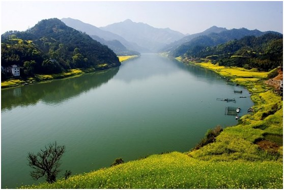
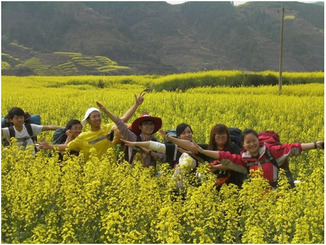
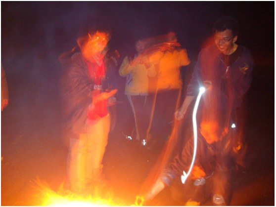
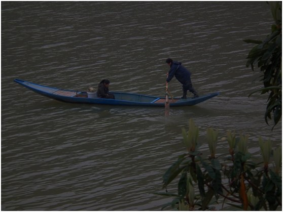
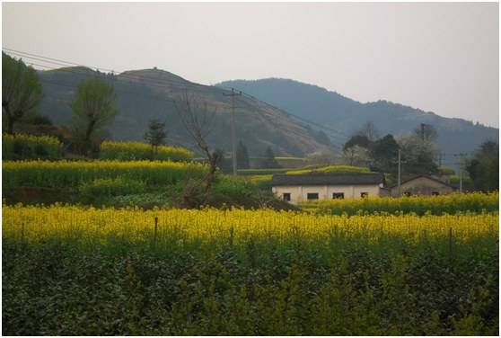
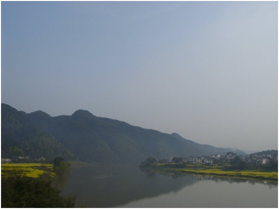

发信人: asdfeng (nucifera), 信区: outdoor
标 题: 野外生存协会2013年出行活动第四弹~新安江~
发信站: 饮水思源 (2013年03月29日08:24:38 星期五)
“屏风明镜诗与画”清明节新安江徒步召集令
清明小假，想要尝试露营？想要走腐败休闲线路？想要在大学的忙碌时光间隙，用光影捕
捉错过的春天？欢迎加入野协“山水画廊”新安江之行！
 screen.width - 200){this.width = screen.width - 200}">
【线路概况】
新安江上游称率水，丰乐河，练江，在古徽州府府冶所在地──歙县境内汇合渐江后始称
新安江。新安江千曲万绕于歙县的深山幽谷之间，水流或奔腾直泻，或一平如镜，深潭与
浅滩相连，加上点缀在两岸的一个个徽派古村落，形成了新安江独特的山水相溶、人文自
然兼具的风光。唐朝诗人李白游完新安江后，吟出了“人行明镜中，鸟度屏风里”的佳句
，后人为之倾倒。因为沿江有青翠山峰、古朴村庄、烂漫山花和金黄的油菜，喜爱摄影的
驴友们硬是“发掘”出了一条条适合“春游”的徒步路线，并管这一路叫“山水画廊”。
我们去的便是新安江在浙江境内的部分，下游就是千岛湖，水质较清澈。“一江春水向东
流”，“春来江水绿如蓝”，春天的江水是最美的。安徽歙县的新安江“山水画廊”，就
是这个春天江浙皖摄影驴友纷纷去报到的“黄金线路”。
另，新安江可是我们野协的传统的FB路线，景色优美的同时，难度较低，沿途能看到传说
中金黄色的油菜花海，还能乘着渡船，沿新安江一路向下，领略初春江南野外的秀丽美景
。试想，满脸的春风拂过，多么适合新手出游，夫妻蜜月，男男搞基呀……过于腐败的就
不多说啦~
一折青山一扇屏，一湾碧水一条琴
 screen.width - 200){this.width = screen.width - 200}">
 screen.width - 200){this.width = screen.width - 200}">
 screen.width - 200){this.width = screen.width - 200}">
 screen.width - 200){this.width = screen.width - 200}">
 screen.width - 200){this.width = screen.width - 200}">
线路难度：★
强度：★
风景指数： ★★★★★
出行人数：30人
时间：4 月3日晚~4月5日晚
【行程安排】
DAY1
下午6点半在庙门集合，乘车前先调整装备，顺便相互认识勾搭，熟络之后，会使整个路程
增色不少。车上，无节操领队也为大家准备了不少破冰活动，保证消除大家第一次见面之
间的隔阂，最后在零点左右我们到达朱家村，快速扎营睡觉。
DAY2
早上7点起床，吃自带的冷餐后收拾出发，做渡船过江后，顺江行进，沿途道路平坦，强度
不大，无须担心，且可以欣赏到油菜花；
中午11点到12点，走到舒适的地方就休息吃冷餐；
12点半左右休息结束，继续沿江走；
15点左右到达漳潭，买门票参观，扎营吃热餐，每组可以吃出自己特色；
晚上进行篝火游戏，happy之后最好尽早休息。
Day 3
早上8点，起床，速度吃早饭，一小时拔营；
10点准时坐上船，船程2小时；
12点到达深渡，腐败！
饭后休息回程，约晚六点返回大闵行；
【费用情况】
车费：163
船费：14
保险：10
腐败餐费：25
漳潭门票：28
装备：50（帐篷20，背包15，防潮垫加睡袋10，气罐加炉头5。自己有装备可退个人装备部
分）
总计：会员290/人，非会员320/人
【报名】
大家还在等什么呢？赶紧加入大自然的怀抱吧！
报名方式：
编辑短信 姓名+性别+年级+联系方式+是否为会员+是否有户外经历（如有，请注明，否则
视为无经历）
至 郭同学 18817559284
并请留意最近协会召集短信，BBS中outdoor版，人人主页的野协召集帖
有疑问仍然可以与18817559284（郭同学）联系。
确定人员后，我们会择时召开准备会，进行分组等具体安排。
置身新安江畔，去寻找那无声诗与有声画，去追回梦中的香格里拉，去体味在现代文明社
会中已显得凤毛麟角的那份自然美吧！报名从速，注定抢手！
【注意事项】
1.以上行程为基本行程，领队有权根据天气、队员状态等情况调整活动计划，不承担由此
造成的损失和责任；
2.野外活动不同于一般旅游，参加活动的队员须听从领队和向导的组织安排，严禁野外用
火吸烟，严禁擅自离队，所有活动安全第一，对于无视指挥所造成的后果由自己负责；
3.无论什么时候，一旦觉得事情应付不来，就要讲出来。艰难的路段最好请人帮助，甚至
放弃不爬，也比发生危急情况要好；
4.登山应发扬团队精神，途中留意同伴情况，危险地段互相提醒或协助通过；
5. 迷路时应折回原路，或寻找避难处静待救援；除保持体力外，并安抚队员平稳情绪；
6.提倡环保，注意保护环境，请将垃圾带离及小心用火，切勿乱丢烟蒂，引起山火；
7. 安全第一，切忌个人英雄主义，要量力而为，集体活动以大局为重，不搞个人主义，不
得单独行动；
8.请守时，对自己负责，对他人负责
9. 报名截止时间可能会视报名情况提前，人员选取不按照先到先得的原则，我们会调整队
伍新老比例和男女比例，本校会员优先。准备会后领队不会单方面取消队员资格（不愿意
签署知情同意书、购买保险、交纳活动费者除外）。对于准备会之后要求退队的同学，若
没有替代队员，活动费中车费部分不退还。
--
※ 来源:·饮水思源 bbs.sjtu.edu.cn·[FROM: 111.186.42.249]
|